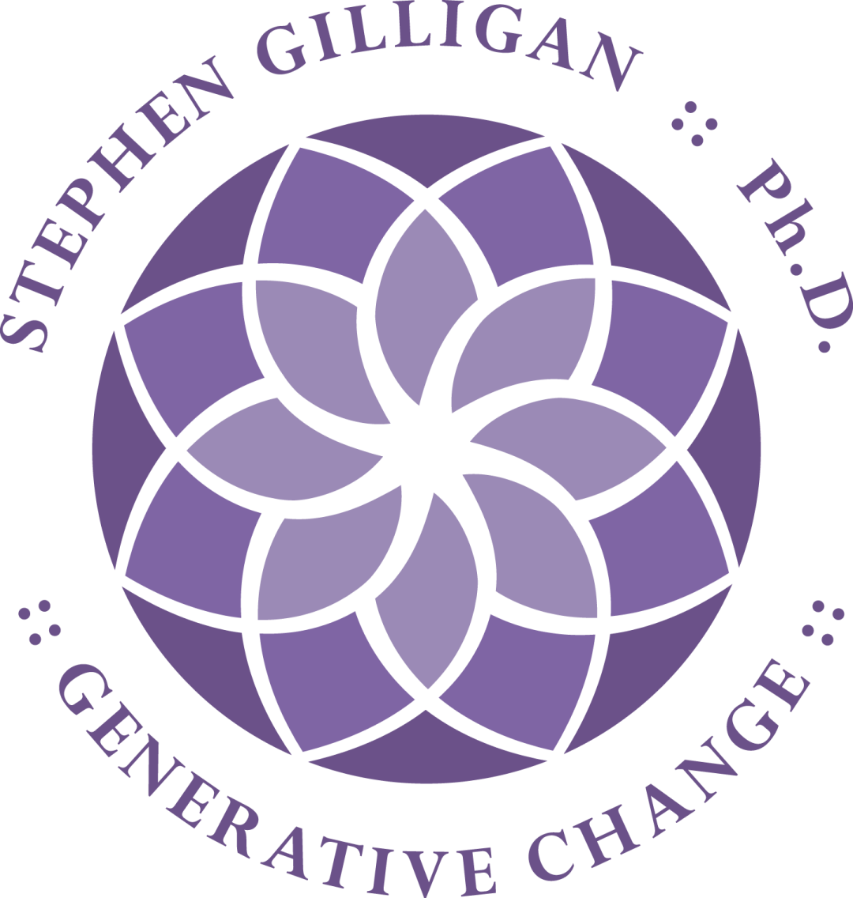
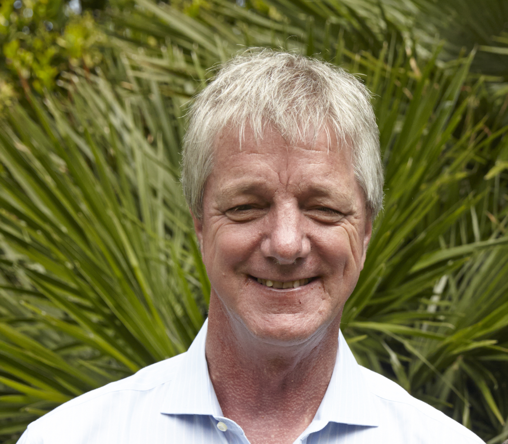

今天（2022年7月17日）是Trance camp的最后一天。我在这里度过了两周的时光。
不得不说很难忘，也许类似这样的meditation camp都会很难忘，但是这一次确实和我之前参加过的另一个camp有很大的不同。
它不仅仅是体验，它也试图让你学到一些可以带走的东西。
有点类似于，别的meditation camp可能是按摩，而这个不仅仅按摩，还教你如何按摩吧。
Trance camp在疫情以前基本上是每年都会有一次，每次都是为期三周，地点都在Stephen Gilligan的所在城市，San Diego这边的一个度假村宾馆举办。
我个人由于一些schedule的冲突，没能参加第一周课程的训练。因此故事从第二周课程开始讲起。

我们的老师Stephen
第二周课程
第二周课程的第一天是非常新鲜的感觉。我一边做Covid的test，一边跟恰好跟我一起在做测试的Chuck聊起来。他跟我一样也是工程师，不过他是上一代的TI的工程师，似乎已经参加过很多年的Trance camp了。
早上是每天的morning checkin。因为第一周大家已经熟悉了流程，只有我还对于一切都还很陌生。大家以8个人为一组，在小组长的带领下，先是静坐沉浸下来（我们叫Settle in， Settle down），接下来就会聊自己今天的intention（企图心）是什么。当然这个intention不是用脑子想出来的，而是在沉浸下来之后，脑子里自然而然浮现的。我一开始还有些不习惯，但是做了几天以后就能接受这种形式了。大家分享完自己的intention以后，还会用一个东西来表达这种intention，分享完以后大家会手握着手围成一圈，一起感受小组众人形成的这种“场”。
再接下来就是听Stephen讲课了。Stephen的声音很轻，语速很慢。实际上他讲课的语气和他给别人做催眠的时候差不了多少，因此听他的课要是不集中注意力的话，非常容易走神。不仅如此，他讲课也没有什么明显的逻辑条理。他虽然发了讲义，但是基本不跟着讲义来讲，而是给人一种想到哪儿讲到哪儿的感觉。还有他有的时候用的词汇也会相对复杂一点，因此我虽然已经在美国很多年了，居然还会有的时候miss一些他说的话的意思。
不过相应的这种讲课的方式也有好处，就是你可以在恍惚中听课，你的“潜意识”可能更容易把他说的内容吸收进去。事实上他想要说的意思翻来覆去就是那一些，比如要settle in， settle down，connected to your center，welcome anything that happens这些，而他在用各种方式讲授的过程当中，会激起听众的各种各样的联想，很多时候，有一些故事或者片段会让人想起自己的一些struggle。
第二周课程除了听他讲课，他也会提出一些小练习，然后他会先找一个学员上台，他来跟这个学员示范来去做这个练习，然后接下来我们所有组员组成两人一个小组，照着他示范的方式来练习。
我个人一共参加了第二周课程的2天的内容（第三天开始我就感觉自己似乎感冒了，虽然covid测试为negative，我还是选择在房间里静养），在这两天里，我记忆中有这样几个练习。
两个人都settle down settle in以后，不仅仅感受对方brain在想什么，也去感受对方胸口（heart）感受到什么，以及对方gut（肚子那边）在想什么。
听起来很玄是不是，我一开始也觉得很玄，但是似乎真的可以感觉到，或者说可以“猜测到”。你其实是可以根据对方的表情，语气，神态，猜测出对方的heart，对方的gut的想法以及感受的。
这个练习我是和Sanjana做的。她祖籍在印度，在san diego当地做瑜伽老师。她不仅仅是一个学员，也在我们上课期间带瑜伽课。可惜我整个课程期间一直都在感冒，一直到最后一天才去参加了她的瑜伽课。
她的瑜伽课非常基础，可能是因为大部分来上课的学员的水平也都比较基础吧。但是她的课非常注重身体感受，融入了非常Stephen课上的内容，给予我们非常充分的空间来感受身体，感受这个世界。
顺带一提，我们这个Trance camp的学员至少有2/3是世界各地执业的心理咨询师，或者是公司里负责做沟通，管理之类的教练，很多学员都非常有经验，做了几十年的心理咨询。我在这群人中，相比起来就属于初学者中的初学者了。
还是说回小练习，我还记得这样一种练习。
两个人都settle down，settle in以后，互相感受对方的三种力量：tenderness， fierceness，playfulness。
似乎挺神经病的是不是？这个练习我是和Christer做的，他是波士顿那边的资深心理咨询师，从业很多年了。我在和他练习的时候，真的能感觉到他身上的那几种力量。Emmm挺神奇的。
我还和Jhi一起做了另外一个小练习，似乎是感受一个什么东西。Jhi是来自澳大利亚的personal coach，一个素食主义者，他来这里也是为了精进自己的coach career。我还能记得他做练习的时候，给人带来的沉静的感觉。
第二周课程的两天就在这样的讲课和小练习中穿插进行，然后我就在房间里躺了4天。。。。虽然这段时间有Zoom转播，但是我感觉转播了以后真的无法有听课的氛围，太容易分心了，加上感冒以后整个身体感觉很累，我就决心安心养病，等下一周的课程了。
第三周课程
第三周课程的形式是早晨的checkin+连续的group consultation。这个可能是我个人收获最大的部分了。具体来说，就是Stephen会带着两个学员一起，给另外一个学员做催眠/咨询。一般来说，一个session大概会在2小时左右。
Stephen可能是现今世上最厉害的催眠大师了（他的老师艾瑞克森是曾经的世界上最厉害的催眠大师），目睹他给这么多的学员做催眠/咨询，让我对于催眠/咨询这项技术有了翻天覆地的认识，在这个过程当中，也对于我自己的过往经历，以及这些经历对我个人的影响反思良多。
我很遗憾地没有抽中被Stephen做催眠/咨询的那个角色，而是作为助手，参与了最后一场咨询。因为这场咨询就在我写文章的上午刚刚发生，一切似乎还历历在目。真的非常神奇。目睹他对于P女生循循善诱，触动了很多我自己对待他人情感，对待自己感受的感受。
那种obstacle，然后resource，然后融合的艺术，真的让我印象太深太深了，我应该会买下录音好好怀念当时的场景。
我只能说，人的苦难各不相同，大家各自都有各自的苦难，都有各自难以面对的事情。因为当我们幼小的时候，我们的心灵无法承受这种苦难，因此我们选择dessociate，选择把这份痛苦压抑在心里。这是一个很好的短期解决方案，但是长期来说，这个方式给我们造成了更大的痛苦。
因此当我们现在力量强大了以后，我们可以把这种苦难重新拿出来，重新体验。当然不是简单地和它在一起，而是需要在resource的支持下，和resource融合的状态下，重新看到这个苦难。
我个人虽然没有抽中让Stephen给我正式的咨询，不过我非常幸运地，在我们小组咨询的时候，请来了Stephen来给我们小组做指导。